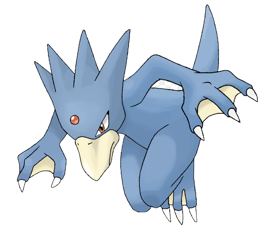
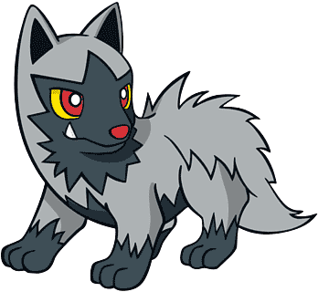
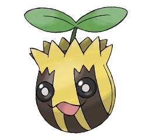
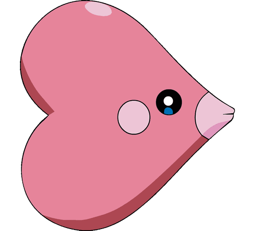

PIKACHU
Cuando se enfada, este Pokémon descarga la energía que almacena en el interior de las bolsas de las mejillas.
Cuando se enfada, este Pokémon descarga la energía que almacena en el interior de las bolsas de las mejillas.
Escupe un fuego tan caliente que funde las rocas. Causa incendios forestales sin querer.

Cuando retrae su largo cuello en el caparazón, dispara agua a una presión increíble.
Mantiene sus grandes orejas levantadas, siempre alerta. Si advierte peligro, ataca inoculando una potente toxina con su cuerno frontal.
Cuando le tiemblan sus redondos y adorables ojos, entona una melodía agradable y misteriosa con la que duerme a sus enemigos.
Cuando nada a toda velocidad usando sus largas extremidades palmeadas, su frente comienza a brillar.
Sus tres cabezas suben y bajan para remover la tierra cercana y facilitar así la excavación.
Padece continuamente dolores de cabeza. Cuando son muy fuertes, empieza a usar misteriosos poderes.
Si sus lametones no se tratan a tiempo, su saliva pegajosa y urticante puede provocar picores persistentes.
Habita en mares de aguas tranquilas. Si se siente en peligro, expulsará por la boca una densa tinta negra para poder huir.
Es capaz de evolucionar de muchas maneras para adaptarse sin problemas a cualquier medio.
Se trata del primer Pokémon del mundo creado a partir de códigos de programación gracias al uso de tecnología de vanguardia.
Varios ejemplares han escapado o bien han sido liberados tras su restauración, lo que comienza a suscitar una serie de problemas.

Si se observa a través de un microscopio, puede distinguirse cuán corto, fino y delicado es el pelaje de este Pokémon.
Al luchar, Chikorita agita la hoja que tiene para mantener a raya al rival. Pero, al mismo tiempo, libera una suave fragancia que apacigua el encuentro y crea un ambiente agradable y de amistad.
Quilava mantiene a sus rivales a raya con la intensidad de sus llamas y las ráfagas de aire ígneo que producen.
No se le da muy bien el almacenamiento de electricidad. A la mínima, descarga energía sin darse cuenta.
Torchic no se separa de su Entrenador. Siempre va tras él con sus pasitos inseguros. Este Pokémon escupe bolas de fuego que pueden alcanzar los 1000 °C y carbonizar al enemigo.
Para protegerse, despide un hedor horrible por las antenas con el que repele a sus enemigos.
Prefiere las cosas calientes. Dicen que cuando llueve le sale vapor de la punta de la cola.
Tiene un pelaje muy fino. Se recomienda no enfadarlo, o se inflará y golpeará con todo su cuerpo.
Un generoso Pokémon que pone huevos muy nutritivos y se los da a personas o Pokémon heridos.
Este Pokémon libera mayor cantidad de esencia para disminuir el ánimo de combate de su oponente.
Furret es de constitución muy delgada. En combate le resulta útil porque puede escabullirse con habilidad por cualquier huequito y escapar. A pesar de que tiene patas cortas, es ágil y veloz.
Tiene querencia por los agujeros, hasta el punto de ocupar los que han hecho otros para anidar y dormir en ellos.
Antaño habitaba en entornos inhóspitos, por lo que sus poderes psíquicos eran supuestamente más potentes aún que en la actualidad.
En cuanto se le ensucia la cara, aunque sea un poco, se la lava con agua. En el resto del cuerpo, la suciedad no parece importarle mucho.
Al nacer es un poco lento, pero va fortaleciendo las patas paulatinamente al disputar carreras con sus congéneres.
Aunque es muy admirado por el pelaje, es difícil de entrenar como mascota porque enseguida suelta arañazos.
Se mueve rodando. Si el terreno es irregular, una chispa provocada por algún bache lo hará explotar.
Le encantan los lugares gélidos y disfruta nadando en aguas a temperaturas en torno a los -10 ºC.
Un Pokémon desvalido y patético. A veces es capaz de saltar alto, pero rara vez más de 2 m.
Sus lianas no dejan de crecer aunque se le desprendan. Aún se desconoce qué aspecto tiene sin ellas.
Sus puñetazos cortan el aire. Son tan veloces que el mínimo roce podría causar una quemadura.
Pese a su aspecto de mera piña de huevos, se trata de un Pokémon. Al parecer, sus cabezas se comunican entre sí por telepatía.
A finales de verano, se pueden ver grupos de Staryu en la orilla de la playa sincronizando el brillo de sus núcleos a ritmo regular.
Almacena bayas dentro de su concha. Para evitar ataques, se esconde inmóvil bajo las rocas.
Sigue con sigilo a los Combee para localizar su colmena. Consume abundantes cantidades de miel, que recoge impregnando las zarpas.
Al predecir el siguiente movimiento de su rival, los extremos de su cola bífida tiemblan ligeramente.
Este Pokémon posee una notable inteligencia y un corazón de oro. Entona un canto melodioso mientras surca el mar.
Si se expone al aura de la luna, los anillos de su cuerpo relucen y adquiere un poder misterioso.
Sorprende a la gente en mitad de la noche y acumula su miedo como energía.
Es fácil encontrarlo cerca del mar. Las largas pinzas que tiene vuelven a crecer si se las quitan de su sitio.
Este Pokémon vive en aguas frías. Sale del agua para buscar comida cuando refresca el ambiente.
Sus largas orejas son unos sensores excepcionales que le permiten diferenciar e identificar lo que oye dentro del agua.
Abunda en los trópicos. Al bailar, sus pétalos se rozan y emiten un agradable sonido.
Abunda en los trópicos. Al bailar, sus pétalos se rozan y emiten un agradable sonido.
Dicen que se le aparece a la gente de buen corazón y la inunda de felicidad.

Tiene un pelaje que repele el agua, por lo que está seco incluso después de bañarse.
Tiene un pelaje que repele el agua, por lo que está seco incluso después de bañarse.
Frota el hocico contra el suelo para desenterrar comida. A veces descubre aguas termales.
Los lugareños rumorean que suele encontrarse en lugares donde han caído estrellas fugaces.
Los lugareños rumorean que suele encontrarse en lugares donde han caído estrellas fugaces.
Viaja arrastrado por los vientos estacionales hasta agotar sus esporas de algodón, momento que marca el final de su viaje y de su ciclo vital.
De tanto utilizar la cola, esta se ha vuelto más hábil que sus dedos. Construye sus nidos en las copas de los árboles.
Totodile tiene cuerpo pequeño, pero fuertes mandíbulas. A veces, piensa que solo está dando un mordisquito y hace unas heridas bastante considerables.
Dicen que, cuando su cuerpo desprende un aura, el tiempo empieza a cambiar inmediatamente.
De día, corre histérico de un lado a otro, pero, cuando se pone el sol, se detiene por completo.
Este Pokémon es muy astuto. Se vale de la oscuridad de la noche para atacar a su presa.
Estos Pokémon tienen forma de caracteres antiguos. No se sabe qué surgió primero, si la vieja escritura o los distintos Unown.
Bayleef tiene un collar de hojas alrededor del cuello y un brote de un árbol en cada una de ellas. La fragancia que desprenden estos brotes anima a la gente.
Si comienza a beber agua para hincharse, es señal de amenaza. Ataca al rival arrojando las púas tóxicas que le recubren el cuerpo.
Odia la luz y las sacudidas. Si le atacan, infla su cuerpo para contraatacar con más ímpetu.
El minúsculo cerebro que tiene en la cola es en realidad un órgano importante dotado de potentes poderes psíquicos.
Le gusta engrosar su coraza añadiendo cortezas de árbol. El aumento de peso no le molesta.
Suicune emana la pureza de los manantiales. Suele corretear por el campo con gran elegancia. Este Pokémon tiene el poder de purificar el agua contaminada.
Este Pokémon vino del futuro haciendo un viaje en el tiempo. Hay quien piensa que, mientras Celebi siga apareciendo, hay un futuro brillante y esperanzador.
Debido a la nutritiva leche que produce, ha contribuido al bienestar de humanos y Pokémon desde tiempos inmemoriales.
Tras ganar velocidad nadando, aprovecha las olas para proyectarse y recorrer planeando hasta 100 m de distancia.
Treecko tiene unos ganchos pequeños en las plantas de los pies con los que puede escalar superficies verticales. Este Pokémon ataca dando un golpetazo con la cola.
Cuando carga contra un enemigo, se le erizan los pelos del lomo. Es muy sensible al sonido.
La primera reacción que Poochyena tiene al ver algo moverse es darle un mordisco. Este Pokémon persigue a su presa hasta que cae agotada. Aunque, a veces, sale huyendo si su presa le responde con un ataque.
En combate, Blaziken expulsa vivas llamas por las muñecas y ataca al enemigo con fiereza. Cuanto más fuerte sea el enemigo, más intensas serán las llamas.
Aprovecha las corrientes ascendentes para ganar altura como si de un planeador se tratase. Suele llevar comida en el pico.
Wurmple usa las púas del lomo para raspar los troncos de los árboles, quitarles la corteza y beber la savia que emanan. Este Pokémon tiene unas ventosas rematándole los pies, con las que se adhiere al cristal sin resbalarse.
La aleta que tiene Mudkip en la cabeza actúa de radar y es muy sensible. Puede captar movimientos que se produzcan en el agua y en el aire, y todo lo que ocurra a su alrededor, sin necesidad de abrir los ojos.
Tiene suficiente inteligencia para cazar en manada. Se comunica con los demás a través de diversos aullidos.
Sus aletas pectorales, caudal y dorsal ondean gráciles en el agua. Por eso se le llama el Bailarín Acuático.
Con sus poderes psíquicos puede deformar el espacio a su alrededor y predecir el futuro.
Prefiere los sitios húmedos. De día está tranquilamente en el bosque, a la sombra. Expulsa polvo tóxico por la cabeza.
Vive en estanques, pero, cuando se desata una tormenta, puede aparecer en los charcos que se forman en las ciudades.
Cae de repente del cielo por las mañanas. Como sabe que es débil, solo se dedica a nutrirse hasta que evoluciona.
Gracias a los cuernos rojos de su cabeza, puede captar lo que sienten las personas.
A base de duro entrenamiento se hace cada vez más fuerte. Es tan resistente que puede soportar cualquier ataque.
Sus cuatro alas le permiten volar en cualquier dirección a su antojo.
Su grito llega a superar los 100 decibelios y provoca a quien lo oiga un dolor de cabeza que puede durar un día entero.
Se pasa 20 horas al día durmiendo. Una de sus habilidades es hacer que le entre sueño a quien lo mire.
En cuanto detecta el olor de una presa, expele agua marina para propulsarse hacia delante y atacar a una velocidad de 120 km/h.

Esparce esporas venenosas muy nocivas que aturden a sus enemigos al inhalarlas y luego les asesta puñetazos de gran intensidad.
Plusle siempre anima a sus compañeros. Cuando algún miembro de su grupo hace un gran esfuerzo en combate, causa un cortocircuito en su interior para mostrar con el chisporroteo su alegría.

Puede prever los movimientos de su rival usando sus poderes psíquicos, fortalecidos por el yoga.
Hace su guarida en cuevas oscuras. Usa sus afiladas garras para desenterrar las gemas que se come.
Cuando llora al acordarse de su madre fallecida, su llanto resuena en el cráneo que lleva en la cabeza.

Recuerda todos los sueños que engulle. Raramente come sueños de adultos porque los de los niños están más ricos.
Está metido en una concha más dura que el diamante, pero tiene un cuerpo muy blando.
Las diminutas alas apenas le permiten volar, pero puede correr a gran velocidad gracias a sus patas hiperdesarrolladas.
Cuando tiene hambre, engulle a todo lo que se mueve. La pobre presa acaba disuelta en sus ácidos.
Si las esferas rojas que tiene a ambos lados de la cabeza brillan con intensidad, indica que está a punto de lanzar ondas ultrasónicas.
Es una masa de músculos y, pese a su pequeño tamaño, tiene fuerza de sobra para levantar en brazos a 100 personas.
Es habitual que las centrales eléctricas cuenten con Pokémon de tipo Tierra para hacer frente a los Electabuzz ávidos de electricidad.
Es más ágil en el agua que en la tierra. La espiral de su vientre no es más que parte de sus vísceras que se ven a través de la piel.
Escarba en el suelo para extraer nutrientes de las raíces de los árboles, que las setas del lomo absorben después casi por completo.
Por el sistema circulatorio de Slugma corre magma líquido. Si este Pokémon se enfriara, el magma perdería el calor y se solidificaría, por lo que se resquebrajaría por completo, perdería algunos trozos y reduciría su tamaño.
Las pinzas que posee contienen acero y pueden hacer trizas cualquier objeto por duro que sea.
Gligar planea por el aire sin hacer ningún ruido, como si fuera patinando. Este Pokémon se agarra a la cara de su rival con las patas traseras, con forma de garra, y las pinzas de las delanteras y le inyecta veneno por el aguijón.
Aparece a orillas de las charcas al caer la noche. Reclama su territorio profiriendo un fuerte grito que recuerda a un bramido.
Se dice que los motivos que luce en el dorso guardan relación con las estrellas, aunque esta teoría sigue siendo todo un misterio.
Cuando elige una presa, embiste sin pensárselo. Este Pokémon es famoso por su carácter violento.
El brillo de su cola es visible desde lejos. En la antigüedad, se usaba mucho como faro.

Sus otrora dos aletas han evolucionado a las actuales antenas y ambas tienen carga positiva y negativa.
Rebota como una pelota. Para luchar contra enemigos más grandes, agita la cola en el aire.
A Skitty le encanta mover cosas e ir detrás de ellas. Es de todos sabido que se dedica a ir detrás de su propia cola y que, al final, acaba mareándose.
Taillow se mantiene firme ante sus rivales, sean lo fuertes que sean. Este valiente Pokémon seguirá mostrándose desafiante, aunque pierda en combate. Además, si se enfada, se pondrá a gritar con energía.
Para proteger a su Entrenador, emplea todo su poder psíquico en crear un pequeño agujero negro.
Los Dustox se acercan a la luz de forma instintiva. De hecho, se agrupan en enjambres alrededor de las luces de las ciudades y causan estragos en las hojas de los árboles que están a pie de calle para alimentarse.
Posee un pelaje fuerte y firme. Las brochas de afeitar cuyas cerdas están hechas con el pelo que se le desprende son un producto de lujo.
Frota su pelo hirsuto contra los árboles con el fin de marcar su territorio. Tiene un carácter más afable que el Zigzagoon de Galar.
Nacido en las profundidades subterráneas, este Pokémon se convierte en pupa al comer la cantidad de tierra equivalente a una montaña.
Lanza patadas mientras gira. Si alcanza mucha velocidad, puede cavar un hoyo en la tierra.
La tonalidad del líquido que libera por la cola cambia en función de su estado anímico.
Como todavía es pequeño, se asusta fácilmente. Cuando se emociona o se sorprende, se le escapa fuego por la nariz y por la boca.
Si dejara de saltar, se debilitaría. La perla que lleva en la cabeza amplifica sus poderes psíquicos.
Se traga todo lo que le quepa en su enorme boca. Sus jugos gástricos pueden digerir cualquier cosa.
Las flores que tiene emanan un aroma relajante. Cuanto más intenso, mejor es su estado de salud.
Magma a 1200 ºC le recorre el cuerpo. Cuando se enfría, el magma se solidifica y lo vuelve lento.
Acumula electricidad estática en el pelaje para lanzar descargas. Cuando va a haber tormenta, suelta chispas por todo el cuerpo.
Habita en zonas ricas en hierro y con numerosos manantiales, por lo que en el pasado las disputas territoriales con los humanos eran frecuentes.
Su estómago es capaz de digerir cualquier cosa. Al hacerlo, produce gases de una pestilencia nauseabunda.
Delcatty prefiere llevar una vida independiente y hacer lo que se le antoje. Como este Pokémon come y duerme según vea en cada momento, no se puede decir que tenga unos hábitos regulares en el día a día.
Con su cara inocente hace que el rival se confíe y, al bajar la guardia, le da un mordisco con sus enormes fauces del que no se puede liberar.
Se alimenta de minerales de hierro o, en ocasiones, de vías de tren para producir la coraza de acero que le protege el cuerpo.
Le encanta medir sus fuerzas. Es tan fuerte que puede detener un tren en marcha de un manotazo.

Su color de piel varía en base a la temperatura del agua, y los que viven en Alola adoptan colores tan vivos que llegan a deslumbrar.
Corre por montañas y prados a la velocidad del viento. Su cuerno curvado tiene tal sensibilidad que puede predecir catástrofes naturales.
Habita en las junglas tropicales. Le crece un delicioso racimo de fruta dulce en el cuello dos veces al año.
Chimecho hace que sus gritos resuenen con eco en su interior. Cuando se enfada, los chillidos se convierten en ondas ultrasónicas capaces de derribar a los enemigos voladores.
Al batir las alas, provoca tormentas de arena que lo ocultan por completo, por lo que rara vez se ha visto a este Pokémon.
Este Pokémon, que no aparenta ser carnívoro, atrapa a sus presas con ambas conchas y no las suelta hasta que dejan de moverse.
Se mueve girando una única extremidad. Se han avistado algunos ejemplares capaces de hacerlo cabeza abajo.
Está continuamente acicalándose las alas de algodón que tiene. Si se ensucia, se da un baño para limpiarse enseguida.
Este Pokémon se regeneró a partir de un fósil. Habitaba en los mares cálidos hace unos cien millones de años.
Popular por su forma de corazón. En algunos sitios es costumbre que las parejas se regalen Luvdisc.
Suelen ir en grupo. Templan su paciencia jugando a empujarse los unos a los otros.
Al parecer, este misterioso Pokémon nació a partir de una figurilla de barro creada por una civilización de hace más de 20 000 años.
Se dice que es el Pokémon más bello. Ha sido la fuente de inspiración de un sinnúmero de artistas.
Cambia de apariencia en función del tiempo atmosférico, pero se trata más bien de una reacción química ajena a su voluntad.
Le une una relación de enemistad con Seviper. Al toparse con uno, alarga sus afiladas zarpas para intimidarlo.
Si establece un vínculo con una persona, la envuelve con sus alas suaves y bellas y le canta en susurros.
Si una presa cae en las fosas cóncavas de arena que cava en el desierto, no podrá salir de ellas.

Se mueve tambaleándose de un lado para otro y termina mareado si camina durante un largo período.